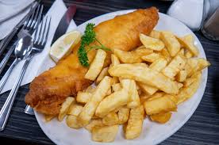
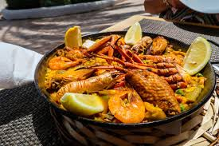
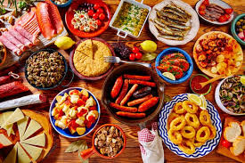
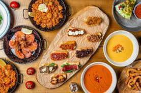
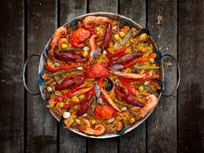
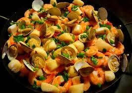
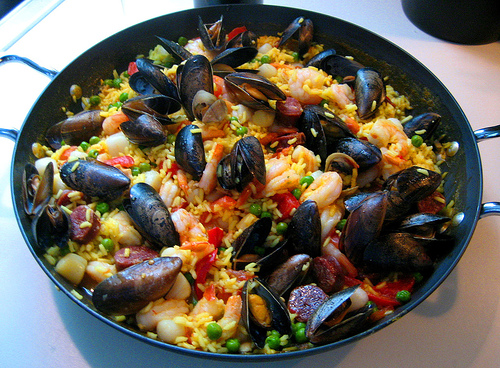
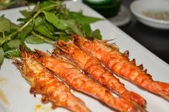
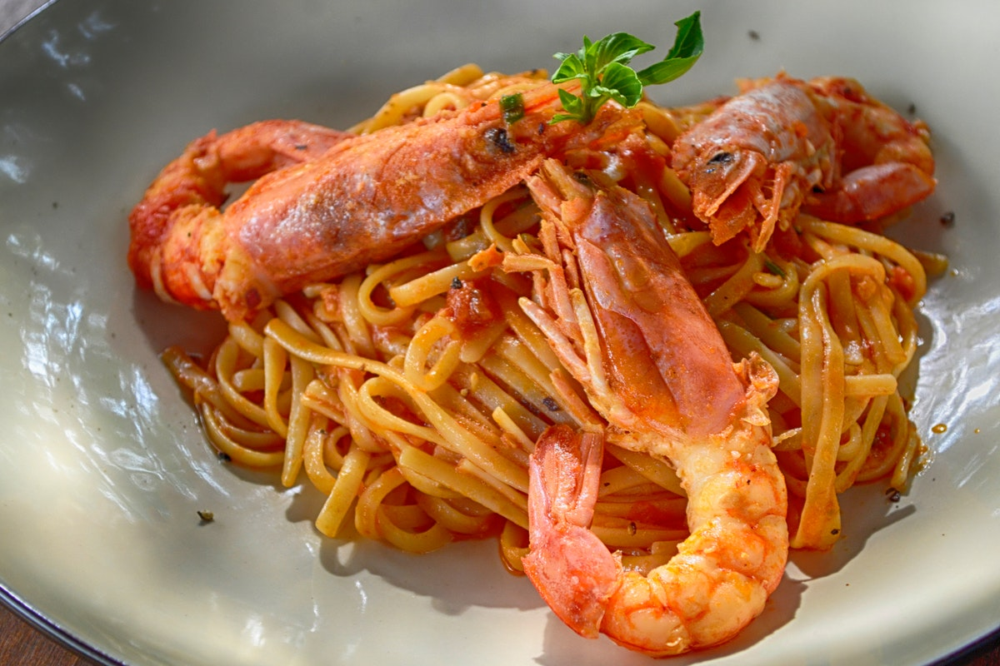

Buen apetito
Besides the traditional, El Boquerón also provides many options for you, such as lamb specials,

Cuisine Focus
Cuisine offer vegetarian platters. The ambience is friendly and the service is excellent. Right in Queens!

Huertas
Besides the traditional, El Boquerón also provides many options for you, such as lamb specials

Misirizzi
East Village, Misirizzi serves up classic, regional fare with a contemporary presentation

Buen apetito
From potatoes to meat, seafood, and vegetables, you will be forgiven for having eyes much bigger than your stomach.

Pan Perfect-Parella
This dish within the national territory, but the paella we recommend to all who come to study Spanish is the paella from Valencia.

Coastal Beaufor spots
Going out to eat tapas is one of the most popular activities in Chaungthar.

Liver, Lobster and Locusts
Boqueria Penn Quarter is offering an amazing Bottomless Brunch all spring and summer long!

Pennsylvania
Weekend Brunch, tapas edition - sweet and savory brunch small plates